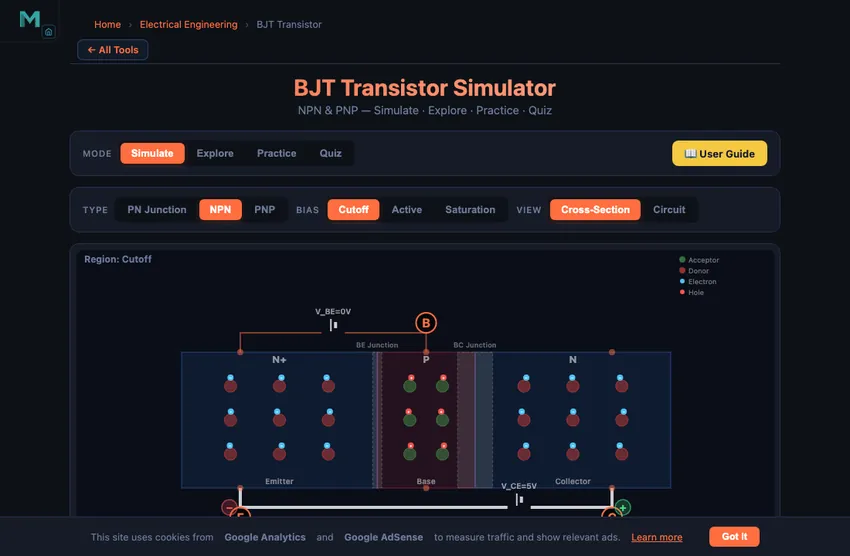
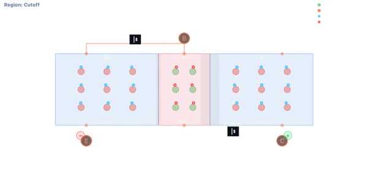
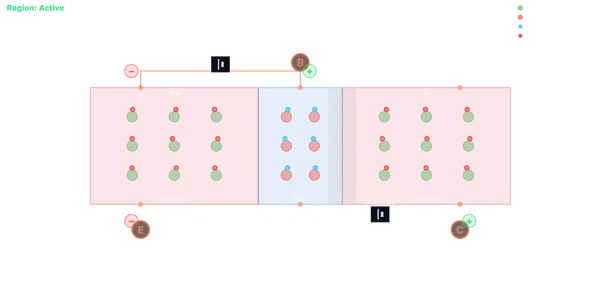

BJT Transistor Simulator
NPN & PNP — Simulate · Explore · Practice · Quiz
3D Model — Analog: BJT Transistor Amplifier
Interactive 3D model of this apparatus. Pick a component on the right, then drag to rotate · scroll to zoom · right-drag to pan.
Adjust VBE and VCE to see how the transistor operates. Press Run to animate carrier flow.
User Guide
1 Overview
The BJT Transistor Simulator visualises how bipolar junction transistors work at the semiconductor level. See electrons and holes flow through NPN and PNP structures, watch depletion regions respond to bias voltages, and observe breakdown mechanisms in real time.
Four modes: Simulate (interactive animation), Explore (educational cards), Practice (unlimited problems), and Quiz (5-question assessment).
2 Building the Circuit
Choose NPN or PNP transistor type. Adjust VBE (base-emitter voltage), VCE (collector-emitter voltage) and β (current gain) using the sliders — every value updates the animation and readouts live. Press Run to see animated carrier flow. The description panel explains what is happening physically at each bias point.
The preset buttons (Cutoff, Active, Saturation, Avalanche, Zener) don't just snap — they glide the sliders to the target voltages, so you watch the device sweep smoothly from one operating region into the next. The button for whichever region you are currently in stays highlighted, even when you drive the sliders by hand.
3 Energising the Circuit
The cross-section view shows the three doped semiconductor regions (Emitter, Base, Collector) with their junctions. The simulator draws two separate things so you never confuse them:
- Fixed dopant ions — dim, dashed-ring circles locked in the crystal lattice. They always show their charge: + for donors in N material, − for acceptors in the P base. They never move.
- Mobile carriers — bright, glowing dots that jitter freely and carry the current: blue − electrons in N material, red + holes in the P base.
A depletion region is exactly where the mobile carriers have been swept away, leaving only the bare fixed ions — so those bands show ions but no glowing carriers, and they widen or narrow as you change the bias.
Key observations:
- Increase VBE past 0.5V to see the BE junction turn on
- At VBE ≈ 0.7V with VCE > 0.2V: Active mode — electrons flow E→B→C
- Reduce VCE below 0.2V: Saturation — both junctions forward biased
- Use the Avalanche preset to see cascade impact ionisation
- Use the Zener preset to see quantum tunnelling at the BE junction
- FWD / REV chips under each junction show its live bias state — the operating region is simply the combination of the two (Active = BE forward + BC reverse)
- Amber arrows on the wires show conventional current I (+ terminal → device → −). In NPN, electrons drift opposite to I; in PNP, holes drift along I
- Drag VBE negative to reverse-bias the BE junction — the battery plates and polarity badges flip, depletion regions widen, and current stops
Right-click the canvas to save as image, copy data, or reset.
4 Circuit Theory
Five educational categories: Basics (PN junctions and BJT structure), Operating Regions (cutoff, active, saturation), Breakdown (avalanche, Zener, punch-through, thermal runaway), Formulas (Ebers-Moll, I-V equations), and Applications (amplifiers, switches, biasing circuits).
5 Try a Problem
Practice: Solve problems about BJT regions, current calculations, and breakdown identification. Instant feedback with explanations.
Quiz: 5 randomly selected questions. Scored with a star rating.
6 Key Concepts
Current gain: β = IC / IB (typically 50–300)
KCL: IE = IC + IB
Active mode: IC = β × IB, VBE ≈ 0.7V
Saturation: VCE(sat) ≈ 0.2V, both junctions forward biased
Region = two junctions: each operating region is just the combination of the BE and BC bias states, shown live by the FWD/REV chips (Active = BE forward + BC reverse; Cutoff = both reverse; Saturation = both forward)
Early effect: in active mode IC rises slightly as VCE increases (finite output resistance) — drag VCE and watch IC creep up
Conventional current vs electron flow: in NPN, electrons drift E→C inside the silicon while conventional current I flows the opposite way in the external wires
Breakdown: Avalanche (>5V, impact ionisation), Zener (<5V, tunnelling)
7 Tips & Best Practices
- Use presets to glide between operating regions and watch the device sweep through the transition.
- Watch the depletion region width change as you sweep VBE from 0 to 0.8V — then drag it negative to reverse-bias the junction and see the battery plates flip.
- Compare the amber conventional-current arrows on the wires with the electron drift inside the silicon — in NPN they point in opposite directions.
- Compare NPN and PNP — carrier types are reversed but principles are identical.
- In Explore mode, read the Breakdown category before attempting breakdown questions.
- Audio feedback: click on interaction, success/error tones in Practice and Quiz.
Understanding BJT Transistors: NPN and PNP



What Is a BJT Transistor?
A Bipolar Junction Transistor (BJT) is a three-terminal semiconductor device that uses two PN junctions to control current flow. The three regions — Emitter, Base, and Collector — are alternately doped to form either an NPN or PNP configuration. A small current at the base terminal controls a much larger current between collector and emitter, making BJTs essential for amplification and switching.
NPN vs PNP: How They Differ
In an NPN transistor, the emitter injects electrons into the thin P-type base. Most electrons cross the base and are swept into the collector by the reverse-biased BC junction. In a PNP transistor, holes are the majority carriers — they flow from emitter through the N-type base to the collector. The physics is identical; only the carrier types and voltage polarities are reversed.
Operating Regions and Breakdown
BJTs operate in four regions: Cutoff (off, both junctions reverse biased), Active (amplification, IC = β×IB), Saturation (fully on, VCE ≈ 0.2V), and Reverse Active (rarely used). Beyond normal operation, two breakdown mechanisms are critical: avalanche breakdown (impact ionisation cascade at high VCB) and Zener breakdown (quantum tunnelling at heavily doped junctions).
The key insight the simulator makes visible is that the region is nothing more than the combination of the two junction bias states. Each junction can be forward or reverse biased, and the four pairings give the four regions. The live FWD/REV chips under the base–emitter and base–collector junctions let you read this directly: forward BE with reverse BC is Active, both reverse is Cutoff, both forward is Saturation.
Forward Bias vs Reverse Bias: What Actually Moves
A junction is forward biased when the applied voltage pushes majority carriers toward it, shrinking the depletion region until carriers can cross (~0.7 V for silicon). It is reverse biased when the voltage pulls carriers away, widening the depletion region so almost no current flows. In the simulator, dragging VBE from positive to negative flips the battery polarity, widens the depletion band, and stops the carrier stream — the whole forward-to-reverse story on a single slider.
Electron Flow vs Conventional Current in a Transistor
This is the point that trips up most students. Conventional current is defined as the direction positive charge would move: out of the battery's + terminal, through the device, back to the − terminal. In an NPN transistor the actual charge carriers inside the silicon are electrons, which are negative, so they drift in the opposite direction to conventional current. In a PNP the carriers are holes (positive), so hole drift and conventional current point the same way. The simulator shows both at once — glowing carriers moving through the semiconductor and amber conventional-current arrows on the external wires — so the relationship is impossible to miss.
The Three Amplifier Configurations — CE, CB, CC
A BJT can be wired in three fundamentally different amplifier topologies, depending on which terminal is shared between input and output.
| Config | Voltage gain | Current gain | Input impedance | Where it lives |
|---|---|---|---|---|
| Common Emitter (CE) | High (50−200×) | High (β ≈ 100) | Medium (~1 kΩ) | General-purpose amplifiers; the workhorse |
| Common Base (CB) | High | ~1 (α ≈ 0.99) | Very low (~50 Ω) | High-frequency RF amplifiers; cascode stages |
| Common Collector (CC) / Emitter Follower | ~1 (less than) | High | Very high (~100 kΩ) | Buffers; impedance matching; output drivers |
Most analogue circuits use a mix: a CE stage for voltage gain, then a CC (emitter follower) at the output to drive a low-impedance load without losing the gain you just built. CB is reserved for specific high-frequency applications where its low input impedance is an advantage.
A BJT Worked Example — Simple Common-Emitter Amplifier
Design a CE amplifier: VCC = 12 V, β = 100, want IC = 1 mA. Pick RC and find RB.
| Step | Working | Result |
|---|---|---|
| Want VCE at mid-supply | VRC = VCC/2 = 6 V | — |
| Collector resistor | RC = VRC/IC = 6/0.001 | 6 kΩ |
| Base current required | IB = IC/β = 0.001/100 | 10 µA |
| Base resistor (VBE = 0.7 V) | RB = (VCC − VBE)/IB = (12−0.7)/10×10−6 | 1.13 MΩ |
| Voltage gain (small-signal) | Av = −gmRC ≈ −(IC/VT)·RC = −(40×10−3)·6000 | −240 |
That last row is the magic: a 1 mV input swing on the base produces a 240 mV swing at the collector, inverted. With careful biasing and proper capacitor coupling, this is the basis of every audio preamp and signal-conditioning circuit since 1950.
References for BJT Analysis
- Sedra & Smith — Microelectronic Circuits, 8th ed., Chapter 6 (BJT Transistors).
- Boylestad & Nashelsky — Electronic Devices and Circuit Theory, 11th ed.
- Horowitz & Hill — The Art of Electronics, 3rd ed. Chapter 2 covers BJT amplifier design with great practical insight.
Explore Related Simulators
Continue your electronics learning with our Ohm's Law Simulator for circuit fundamentals, Capacitor Bank Simulator for energy storage and RC circuits, Ray Optics Simulator for physics exploration, or the Litmus Test Virtual Lab for chemistry.